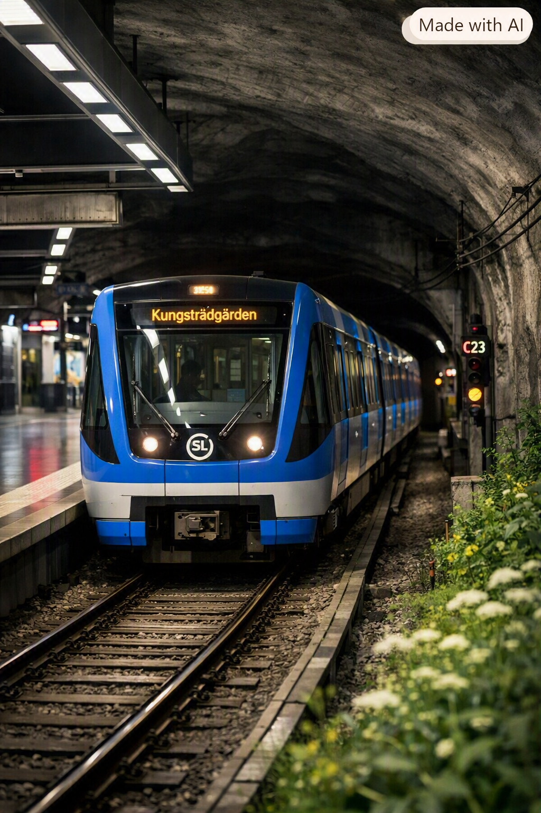

Tunnelbanan är huvudsakligen ett underjordiskt färdsätt som trafikeras
av tåg. Den gör det möjligt att snabbt transportera större mängder
resenärer inom ett storstadsområde och är en viktig del av ett effektivt
kollektivtrafiksystem. Vid planering av järnväg strävar man efter att
bygga planskilda korsningar för att öka säkerheten och se till att
tågtrafiken kan flyta på utan störningar. Genom att separera olika
trafikslag minskar risker för olyckor och förseningar.
Tack vare tunnelbanans utformning är det också möjligt att uttnyttja
marken ovanför, vilket är värdefullt i tätbefolkade områden. En annan
fördel med att bygga under jord är att tunnelbanan blir mindre känslig
för väderpåverkan, vilket gör den till ett pålitligt färdsätt året runt.

Tunnelbanan är ett av de mest miljövänliga transportsätten. Eftersom
tågen drivs av el resulterar det i väldigt låga nivåer av utsläpp.
Tågen kan transportera många människor på en liten yta, vilket
reducerar biltrafiken och trängseln i städerna. Behovet av att bygga
bredare vägar minskar, och luftkvaliteten förbättras när färre bilar
används. Tunnelbanans höga kapacitet gör att den kan ersätta tusentals
bilresor varje dag, vilket ger betydande klimatvinster
Samtidigt påverkar bygget av tunnlar och stationer den omkringliggande
miljön. Sprängning, schaktning och materialanvändning kan påverka
naturmiljö och grundvatten. Därför kontrolleras arbetsplatserna
kontinuerligt och man ser över att rekommendationer kring
vattenrening, avfallshantering, kemikalier och bullerskyddsåtgärder
följs. Genom noggrann planering och miljöarbete strävar man efter att
minimera påverkan under byggprocessen och skapa ett långsiktigt
hållbart transportsystem.
Att resa med tunnelbanan är hållbart, men själva bygget bidrar till klimatpåverkan. Under hela byggtiden jobbar vi därför med att hitta klimatsmarta lösningar. De största utsläppen av koldioxid kommer från tillverkning av betong, armering och konstruktionsstål samt våra transporter av bergmassor. Genom att planera transporterna smart och hålla nere storleken på tunnlar och stationer minskar vi utsläppen. Vi jobbar aktivt med att hitta och genomföra fler åtgärder som minskar vår påverkan på klimatet.